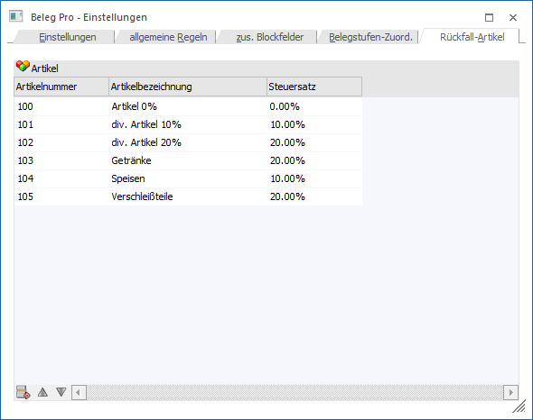
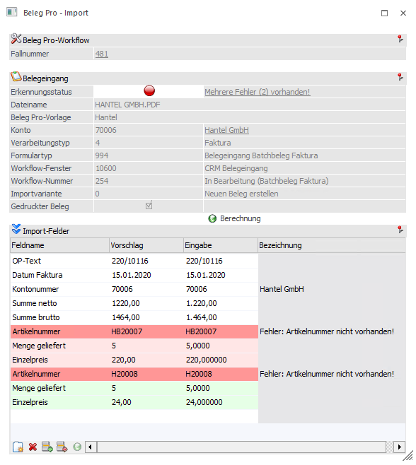
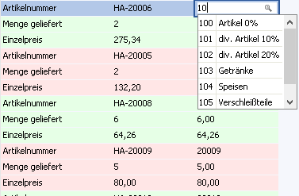
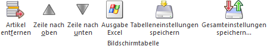

In der Tabelle des Registers "Rückfall-Artikel" können Rückfall-Artikel für die Autovervollständigung eingetragen werden. Dieses kommen im Fenster Beleg Pro - Import, bei der Eingabe eines Wertes in der Belegvariable "Artikelnummer", zum Tragen.
Hinweis
Rückfall-Artikel werden nur beim Erzeugen von Belegen aus dem Modul "Beleg Pro" verwendet (WinLine FAKT).

Ø Artikelnummer
Hier kann der gewünschte Rückfall-Artikel eingetragen werden, welcher in weiterer Folge in der Autovervollständigung beim Beleg Pro - Import angezeigt werden.
Hinweis
Wenn Artikel in der Tabelle "Rückfall-Artikel" eingetragen sind, dann werden in der Autovervollständigung des Beleg Pro - Imports nur diese angezeigt. Wenn andere Artikel angezeigt werden sollen, muss der Matchcode (F9 oder Lupe) herangezogen werden.
Ø Artikelbezeichnung
Hier wird die Bezeichnung des eingetragenen Artikels als Infotext angezeigt.
Ø Steuersatz
Es wird der beim eingetragenen Artikel hinterlegte Steuersatz als Infotext angezeigt.
Wenn ein Artikel nicht als Lieferantenspezifische Artikelnummer in einem Preiseintrag gefunden wurde bzw. der Artikel mit derselben Nummer nicht innerhalb der WinLine angelegt ist, wird diese Artikelzeile rot markiert. (Siehe Screenshot, Artikelnummer HA-20006)

In nachfolgendem Screenshot wird die Autovervollständigung im Beleg Pro - Import, im Eingabefeld "Artikelnummer", gezeigt.

Es ist ersichtlich, dass nur die eingetragenen Rückfall-Artikel in der Autovervollständigung angezeigt werden. Damit nach allen Artikeln gesucht werden kann, muss der Matchcode verwendet werden.
Tabellenbuttons

Ø Artikel entfernen
Durch Auswahl dieses Buttons wird der markierte Artikel gelöscht.
Ø Zeile nach oben / Zeile nach unten
Mit diesen Buttons können Artikel innerhalb der Tabelle verschoben werden.
Ø Ausgabe Excel
Durch Anwahl des Buttons "Ausgabe Excel" wird der Inhalt der Tabelle an Microsoft Excel übergeben.
Ø Tabelleneinstellungen speichern
Die Spalten einer Tabelle können grundsätzlich an beliebige Positionen verschoben, bzw. in der Breite entsprechend angepasst werden. Durch Anwahl des Buttons "Tabelleneinstellungen speichern" werden die Einstellungen benutzerspezifisch gespeichert und bei dem nächsten Aufruf des Programmpunktes wieder vorgeschlagen.
Ø Gesamteinstellungen speichern
Im Gegensatz zu "Tabelleneinstellungen speichern" können mit "Gesamteinstellungen speichern" mehrere Tabellenaufbauten gespeichert und nach Wunsch geladen werden. Zusätzlich werden Sonderfunktionen der Tabelle (z.B. "Spalte gruppieren") ebenfalls bei der Speicherung bedacht.